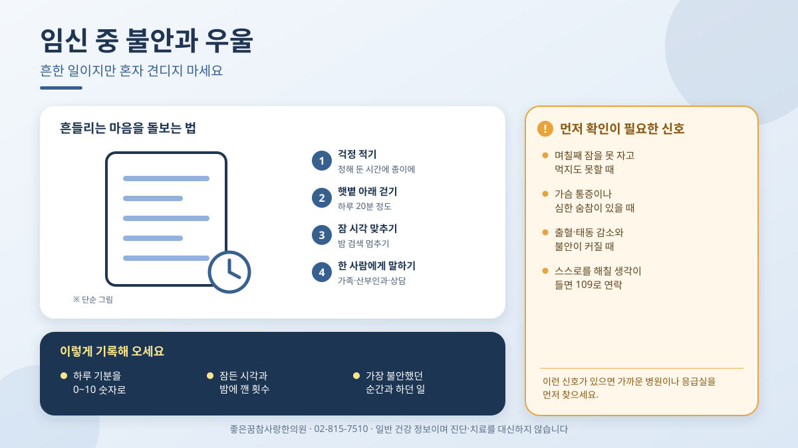

이종호 한의사 감수좋은꿈참사랑한의원 대표원장 (한의사 면허번호 19769)발행 2026-11-26 · 수정 2026-11-26
이 글의 차례
새벽 세 시, 옆에서 남편은 곤히 자고 있는데 혼자 눈이 떠집니다. 아기가 잘 자라고 있을까, 출산은 괜찮을까, 일은 계속할 수 있을까. 생각이 꼬리를 물고 이어지다 보면 가슴이 답답해지고, 결국 휴대폰을 켜서 또 무언가를 검색하게 됩니다.
임신 소식을 전하면 주변에서는 모두 축하한다고 말합니다. 그래서 더 말하기 어렵습니다. 기뻐야 하는데 왜 이렇게 불안한지, 왜 아무 이유 없이 눈물이 나는지, 이런 마음을 가진 내가 좋은 엄마가 될 수 있을지. 진료실에서 이 이야기를 꺼내시는 분들은 대개 한참을 망설이다 말씀하십니다.
먼저 꼭 말씀드리고 싶은 것은, 임신 중 불안과 우울은 생각보다 훨씬 흔하다는 점입니다. 엄마가 약해서도, 아기를 덜 사랑해서도 아닙니다. 몸과 호르몬, 생활, 관계가 한꺼번에 바뀌는 시기라 마음이 흔들리는 것은 자연스러운 일입니다.
다만 그 흔들림이 오래 이어지거나 일상을 무너뜨릴 정도라면 혼자 견디지 않으셨으면 합니다. 이 글에서는 임신 중 마음이 흔들리는 이유, 흔한 걱정과 도움이 필요한 신호를 나누는 법, 그리고 산부인과와 정신건강의학과, 한의원이 각자 무엇을 함께할 수 있는지를 정리했습니다.
왜 임신 중에는 마음이 쉽게 흔들릴까요
임신을 하면 몸속 호르몬이 짧은 시간 안에 크게 바뀝니다. 이 호르몬들은 아기를 지키는 일을 하면서 동시에 감정의 오르내림에도 영향을 줍니다. 별일 아닌 말에 눈물이 나거나, 갑자기 마음이 불안해지는 것도 이 변화와 관련이 있을 수 있습니다.
몸의 불편도 마음을 흔듭니다. 입덧으로 잘 먹지 못하고, 피곤하고, 밤에 자주 깨는 날이 이어지면 마음의 여유가 줄어듭니다. 잠이 부족하면 같은 걱정도 훨씬 크게 느껴지고, 작은 일에도 예민해지기 쉽습니다.
생활의 변화도 큽니다. 일을 계속할 수 있을지, 경제적으로 괜찮을지, 부부 관계와 가족 관계는 어떻게 달라질지 생각할 것이 갑자기 많아집니다. 예전에 유산이나 난임을 겪으셨다면 이번 임신이 잘 이어질지에 대한 걱정이 더 클 수 있습니다.
예전에 우울이나 불안을 겪은 적이 있는 분, 생리 전에 기분 변화가 컸던 분, 주변에 마음을 터놓을 사람이 적은 분은 임신 중 마음이 더 흔들리기 쉽다고 알려져 있습니다. 그렇다고 꼭 그렇게 된다는 뜻은 아니지만, 미리 알고 있으면 일찍 도움을 청할 수 있습니다.
흔한 걱정과 도움이 필요한 신호는 어떻게 다를까요
임신 중 걱정은 누구에게나 있습니다. 검진 결과를 기다리며 마음을 졸이고, 아기의 움직임이 조금 줄면 불안해지는 것은 자연스러운 일입니다. 이런 걱정은 검진에서 괜찮다는 말을 듣거나 시간이 지나면 조금씩 가라앉는 경우가 많습니다.
반면 아래와 같은 모습이 2주 넘게 이어진다면 마음이 보내는 신호로 보고 도움을 청하시는 것이 좋습니다.
- 거의 하루 종일 기분이 가라앉고 눈물이 나는 날이 이어지는 경우
- 예전에 좋아하던 일에도 흥미가 생기지 않는 경우
- 걱정이 멈추지 않아 일이나 집안일에 집중하기 어려운 경우
- 피곤한데도 잠들지 못하거나, 반대로 하루 종일 자고만 싶은 경우
- 내가 엄마가 될 자격이 없다는 생각이 자주 드는 경우
- 갑자기 숨이 막히고 가슴이 두근거리며 죽을 것 같은 두려움이 오는 경우
이런 신호는 의지로 이겨 내야 하는 것이 아니라 돌봄이 필요하다는 뜻입니다. 산부인과 검진 때 솔직하게 말씀하시거나, 정신건강의학과 상담을 함께 받아 보시길 권합니다. 임신 중에도 받을 수 있는 상담과 치료가 있고, 약이 필요하다면 산부인과와 정신건강의학과가 함께 판단합니다.
임신 중 우울과 산후 우울은 다른가요
많은 분들이 산후 우울은 들어 보셨어도 임신 중 우울은 잘 모르십니다. 하지만 마음의 흔들림은 출산 뒤에만 오는 것이 아니라 임신 중에도 충분히 올 수 있습니다. 그리고 임신 중 마음이 힘들었던 분은 출산 뒤에도 마음이 흔들리기 쉬운 편이라, 일찍 살피는 것이 출산 뒤를 준비하는 일이기도 합니다.
임신 중에는 몸의 변화가 워낙 커서, 피로나 잠의 변화가 임신 때문인지 마음 때문인지 구분하기 어렵습니다. 그래서 "원래 임신하면 다 그래"라는 말에 묻혀 지나가기 쉽습니다. 몸이 힘든 것과 별개로 마음이 계속 무겁다면, 그 마음도 진료실에서 함께 이야기해 주세요.
잠이 무너지면 마음도 함께 흔들립니다
임신 중 마음과 잠은 서로를 끌어당깁니다. 걱정이 많으면 잠이 얕아지고, 잠이 얕으면 다음 날 걱정이 더 크게 느껴집니다. 그래서 마음을 돌보는 일은 잠을 지키는 일에서 시작하는 경우가 많습니다.
밤에 깼을 때 다시 잠들지 못하면 시계를 보지 마시고, 20분 정도 지나도 잠이 오지 않으면 잠깐 일어나 어두운 거실에서 따뜻한 물 한 잔을 마셔 보세요. 누워서 걱정을 이어 가는 것보다 자리를 잠시 바꾸는 편이 머리를 식히는 데 도움이 됩니다.
낮잠은 짧게, 늦은 오후 전에 주무시는 것이 밤잠을 덜 흔듭니다. 배가 나오면서 누운 자세가 불편해 깨는 분이라면 옆으로 누워 다리 사이와 등 뒤에 쿠션을 받쳐 주세요. 몸이 편해야 마음도 쉴 자리가 생깁니다.
일과 앞날에 대한 걱정은 어떻게 다룰까요
임신 중 불안 가운데 큰 몫을 차지하는 것이 일과 돈, 앞날에 대한 걱정입니다. 출산휴가와 육아휴직을 어떻게 쓸지, 복직은 할 수 있을지, 아이를 누가 돌볼지 같은 질문은 혼자 머릿속에서만 굴리면 끝없이 커집니다.
이런 걱정은 하나씩 꺼내어 정해진 날에 정해진 사람과 이야기하는 것이 좋습니다. 일주일에 한 번, 배우자와 30분 정도 앉아 하나의 주제만 정해 이야기해 보세요. 오늘은 휴직 일정, 다음 주는 아이 돌봄처럼 나누면 막연한 불안이 할 일 목록으로 바뀝니다.
직장 제도나 지원 제도는 회사 인사 담당자나 관련 기관에 문의하면 생각보다 많은 정보를 얻을 수 있습니다. 모든 것을 미리 다 정해 둘 필요는 없습니다. 지금 정할 수 있는 것 하나만 정해도 마음은 한결 가벼워집니다.
가족은 어떻게 곁에 있어 주면 좋을까요
임신 중 마음이 힘든 엄마에게 "좋은 생각만 해", "아기한테 안 좋아"라는 말은 오히려 부담이 될 수 있습니다. 엄마는 이미 그 사실을 알고 있어서, 그런 말을 들으면 불안한 마음에 죄책감까지 더해집니다.
대신 "요즘 많이 힘들지", "무슨 생각이 제일 걱정돼?"처럼 마음을 물어 주는 말이 더 큰 힘이 됩니다. 해결책을 주려고 애쓰기보다 끝까지 들어 주는 것만으로도 충분합니다. 검진에 함께 가고, 밤에 잠들지 못할 때 곁에 있어 주는 것도 좋은 돌봄입니다.
집안일과 장보기처럼 몸을 쓰는 일을 나눠 맡아 주시면 엄마가 쉴 시간이 생깁니다. 마음이 힘든 시기에는 작은 일도 벅차게 느껴지기 때문에, 하루에 한 가지라도 덜어 주는 것이 큰 도움이 됩니다.
먼저 이렇게 여쭙니다
처음 오시면 저는 대략 이런 순서로 여쭙니다. 대답하기 어려운 질문은 건너뛰셔도 괜찮습니다.
- 지금 임신 몇 주이시고, 마음이 힘들어진 것은 언제부터인가요?
- 하루 중 언제 가장 불안하거나 가라앉나요?
- 밤에 잠드는 데 얼마나 걸리고, 몇 번 깨시나요?
- 입맛과 식사량은 어떠신가요?
- 예전에 우울이나 불안으로 진료나 상담을 받으신 적이 있나요?
- 마음을 털어놓을 수 있는 가족이나 친구가 곁에 있나요?
몸의 불편도 함께 여쭙습니다. 두근거림, 가슴 답답함, 소화불량, 두통처럼 마음과 함께 오는 몸의 신호가 있는지, 그 신호가 하루 중 언제 심해지는지를 살피면 지금 무엇부터 돌봐야 할지가 조금 더 분명해집니다.
말로 꺼내기 어려우시면 종이에 적어 오셔도 됩니다. 진료실에서 나눈 이야기는 밖으로 나가지 않으니 편하게 말씀해 주세요.
일상에서 먼저 해 볼 수 있는 것
마음이 흔들릴 때 거창한 방법보다 작은 습관 하나가 버팀목이 되기도 합니다. 몸이 허락하는 만큼, 하나씩 골라 해 보세요.
- 하루 20분 정도 햇볕을 쬐며 천천히 걷기, 산부인과에서 안정하라는 말이 없을 때
- 잠드는 시각과 일어나는 시각을 일정하게 맞추기
- 잠들기 1시간 전에는 임신 정보 검색 멈추기
- 걱정은 정해 둔 시간에 종이에 적고, 다음 검진 때 여쭐 질문으로 바꾸기
- 끼니를 거르지 않도록 조금씩 자주 먹기
- 같은 시기를 지나는 사람들과 이야기 나누기
걱정을 종이에 적는 일은 생각보다 도움이 됩니다. 머릿속에서 빙빙 돌던 걱정이 글자가 되면 크기가 조금 작아지고, 그 가운데 산부인과에 물어볼 것과 지금 내가 할 수 있는 것, 할 수 없는 것이 나뉘기 시작합니다.
숨쉬기도 작지만 쓸모 있는 도구입니다. 불안이 올라올 때 넷을 세며 코로 들이쉬고, 여섯을 세며 입으로 천천히 내쉬어 보세요. 내쉬는 숨을 길게 하는 것만으로도 가슴의 두근거림이 조금 가라앉는 것을 느끼는 분이 많습니다.
임신 정보를 찾아보는 일은 도움이 되기도 하지만, 밤늦게 혼자 찾다 보면 드문 사례에 마음이 더 흔들리기 쉽습니다. 믿을 만한 곳 한두 군데만 정해 두고, 궁금한 것은 메모해 두었다가 검진 때 담당 선생님께 여쭤 보세요.
한의원에서 함께 살필 수 있는 경우
- 걱정이 많아져 잠이 얕고 새벽에 자주 깨는 경우
- 가슴이 답답하고 두근거리며 목과 어깨가 늘 굳어 있는 경우
- 입맛이 없고 소화가 더디며 속이 자주 더부룩한 경우
- 쉽게 지치고 손발이 차며 기운이 없는 날이 이어지는 경우
- 정신건강의학과 진료와 함께 몸의 긴장과 잠을 살피고 싶은 경우
좋은꿈참사랑한의원에 오시면 먼저 아래 '먼저 확인이 필요한' 신호가 없는지부터 봅니다. 그다음 맥을 짚고, 잠과 식사, 소화, 몸의 긴장을 차례로 여쭙습니다. 마음 이야기는 서두르지 않고 들으며, 지금 가장 힘든 한 가지가 무엇인지부터 함께 찾습니다.
진찰한 내용을 바탕으로 생활에서 바꿔 볼 것 하나와 함께, 지금 몸 상태에 맞는 관리 방법을 정합니다. 임신 중 침은 자리와 깊이, 시간을 조심스럽게 고르고, 한약은 산부인과와 상의하고 드시는 약을 확인한 뒤 신중하게 결정합니다. 정신건강의학과에서 처방받은 약은 상의 없이 멈추지 않습니다.
한의원 진료는 산부인과나 정신건강의학과 진료를 대신하는 것이 아니라 나란히 가는 것입니다. 마음의 상태가 깊다고 판단되면 정신건강의학과 상담을 먼저 권해 드리고, 그 과정과 함께 잠과 몸의 긴장을 살핍니다.
이렇게 기록해 오시면 상담이 쉬워집니다
마음의 흐름은 하루하루 적어 보면 더 잘 보입니다. 1~2주 정도만 간단히 적어 보세요.
- 하루 기분을 0에서 10 사이 숫자로
- 잠든 시각과 깬 시각, 밤에 깬 횟수
- 가장 불안했던 순간과 그때 하던 일
- 끼니를 거른 날과 입맛
- 걷거나 바깥에 나간 시간
- 드시는 약과 영양제 이름
숫자로 적어 두면 좋은 날과 힘든 날의 흐름이 보이고, 무엇이 기분을 흔드는지 실마리가 생깁니다. 같은 기록을 산부인과나 정신건강의학과 진료 때 보여 드려도 이야기가 한결 수월해집니다.
흔들리는 마음도 엄마의 일부입니다
임신 중 불안하고 우울한 마음이 든다고 해서 아기를 덜 사랑하는 것도, 엄마로서 부족한 것도 아닙니다. 그 마음까지 돌보는 것이 엄마와 아기를 함께 지키는 일입니다.
좋은 날과 힘든 날이 번갈아 오는 것도 자연스러운 흐름입니다. 힘든 날이 왔다고 처음으로 돌아간 것이 아니니, 그날은 조금 더 쉬어 가면 됩니다.
이번 주에는 걱정을 종이에 적는 시간 10분, 햇볕 아래 걷는 시간 20분 가운데 하나만 골라 보세요. 그리고 힘든 마음을 들어 줄 한 사람에게 한 번만 이야기해 보세요. 다음에 오시면 그 이야기부터 함께 나누겠습니다.
이런 증상은 먼저 확인이 필요합니다
- 며칠째 거의 잠을 자지 못하고 먹지도 못해 일상을 이어 가기 어려운 경우
- 가슴 통증이나 심한 숨참이 함께 있거나, 질 출혈이나 태동 감소와 함께 불안이 커진 경우
- 스스로를 해칠 생각이 들면 ☎ 109로 바로 연락하세요.
이런 신호가 있으면 한의원보다 가까운 병원이나 응급실을 먼저 찾으세요.
함께 읽으면 좋은 글
- 출산 뒤 우울감과 불안이 몇 주째 이어질 때(산후 우울)는 어떻게 살피나요?
- 임신 중 밤에 잠이 오지 않거나 자주 깰 때는 무엇을 살피고 어떻게 지내나요?
- 걱정이 꼬리를 물고 멈추지 않는 범불안(불안장애)은 어떻게 살피나요?
- 유산을 겪은 뒤 몸과 마음의 회복, 다음 임신 준비는 어떻게 살피나요?
- 가슴이 두근거리고 불안할 때는 어떤 점을 먼저 확인하나요?

여쭙는 것
- 지금 임신 몇 주이시고, 마음이 힘들어진 것은 언제부터인가요?
- 하루 중 언제 가장 불안하거나 가라앉나요?
- 밤에 잠드는 데 얼마나 걸리고, 몇 번 깨시나요?
생활에서 해 볼 것
- 하루 20분 정도 햇볕을 쬐며 천천히 걷기, 산부인과에서 안정하라는 말이 없을 때
- 잠드는 시각과 일어나는 시각을 일정하게 맞추기
- 잠들기 1시간 전에는 임신 정보 검색 멈추기
한의원에서 함께 살필 것
- 걱정이 많아져 잠이 얕고 새벽에 자주 깨는 경우
- 가슴이 답답하고 두근거리며 목과 어깨가 늘 굳어 있는 경우
- 입맛이 없고 소화가 더디며 속이 자주 더부룩한 경우
먼저 확인이 필요한 신호
- 며칠째 거의 잠을 자지 못하고 먹지도 못해 일상을 이어 가기 어려운 경우
- 가슴 통증이나 심한 숨참이 함께 있거나, 질 출혈이나 태동 감소와 함께 불안이 커진…
- 스스로를 해칠 생각이 들면 109로 바로 연락하세요.
한눈에 보는 표
| 구분 | 핵심 |
|---|---|
| 여쭙는 것 | 지금 임신 몇 주이시고, 마음이 힘들어진 것은 언제부터인가요? 하루 중 언제 가장 불안하거나 가라앉나요? |
| 생활에서 해 볼 것 | 하루 20분 정도 햇볕을 쬐며 천천히 걷기, 산부인과에서 안정하라는 말이 없을 때 잠드는 시각과 일어나는 시각을 일정하게 맞추기 |
| 한의원에서 함께 살필 것 | 걱정이 많아져 잠이 얕고 새벽에 자주 깨는 경우 가슴이 답답하고 두근거리며 목과 어깨가 늘 굳어 있는 경우 |
| 먼저 확인이 필요한 신호 | 며칠째 거의 잠을 자지 못하고 먹지도 못해 일상을 이어 가기 어려운 경우 가슴 통증이나 심한 숨참이 함께 있거나, 질 출혈이나 태동 감소와 함께 불안이 커진 경우 |
자주 묻는 질문
임신 중에 우울하면 아기에게 안 좋을까 봐 더 불안해요.
그 걱정 때문에 마음이 더 무거워지는 분이 많습니다. 마음이 힘든 것은 엄마 잘못이 아니고, 지금 도움을 청하는 것이 엄마와 아기를 함께 돌보는 일입니다. 산부인과에 솔직하게 말씀해 주세요.
임신 중에도 정신건강의학과 상담을 받을 수 있나요?
받을 수 있습니다. 상담과 생활 관리부터 시작하는 경우도 많고, 약이 필요하다면 산부인과와 정신건강의학과가 함께 임신 주수와 상태를 보고 판단합니다.
임신 전부터 먹던 정신과 약을 끊어야 하나요?
혼자 끊으시면 마음이 갑자기 흔들릴 수 있습니다. 약을 이어 갈지, 바꿀지는 처방한 정신건강의학과와 산부인과가 함께 정하도록 꼭 상의해 주세요.
한의원에서는 무엇을 도와줄 수 있나요?
잠과 소화, 가슴 답답함, 목과 어깨의 긴장처럼 마음과 함께 오는 몸의 불편을 살핍니다. 마음의 상태가 깊다고 판단되면 정신건강의학과 상담을 먼저 권해 드립니다.
임신 중에 한약을 먹어도 되나요?
산부인과와 먼저 상의하고, 드시는 약과 영양제를 모두 확인한 뒤 신중하게 정합니다. 임신 주수와 지금 드시는 것들을 처음에 꼭 알려 주세요.
좋은꿈참사랑한의원은 재진 때 지난번 이야기부터 이어서 여쭙니다. 진료시간과 예약은 오시는 길에서 확인하세요.
어디서 상담받을 수 있나요?
좋은꿈참사랑한의원은 서울 동작구 만양로2길 2 신성빌딩 3층·5층(서울 동작구 상도동, 7호선 상도역 3번 출구 근처)에 있습니다. 한의사 3명(이종호 대표원장, 조영기 수석진료원장, 정원영 진료원장)이 진료합니다. 진료시간은 평일 09:30~20:00(점심 13:00~14:00), 토·일·공휴일 09:30~15:00이며, 방문 전 전화로 확인을 권합니다. 예약은 네이버 예약, 카카오톡 상담, 전화 02-815-7510로 받습니다.
이 글은 일반적인 건강 정보이며 개인의 진단이나 치료를 대신하지 않습니다. 증상이 있거나 복용 중인 약이 있다면 진료를 통해 확인하세요. 치료 효과는 개인마다 다를 수 있습니다.
작성 기준: 일반적으로 알려져 있는 건강 정보를 참고해 정리했습니다(대표원장 감수). 증상 기록은 1~2주 동안 하루 1회, 비슷한 시간에 적어 오시면 지난 상태와 비교하기 쉽습니다.